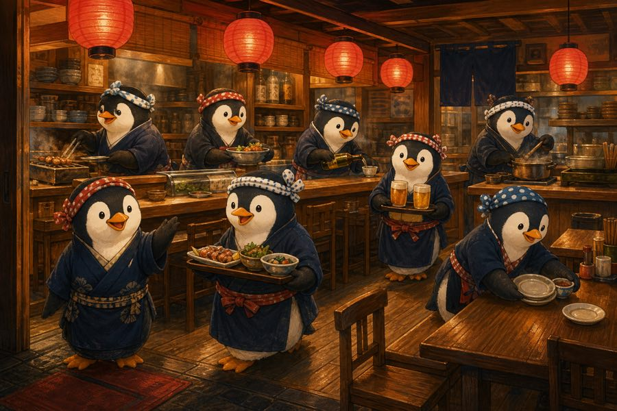
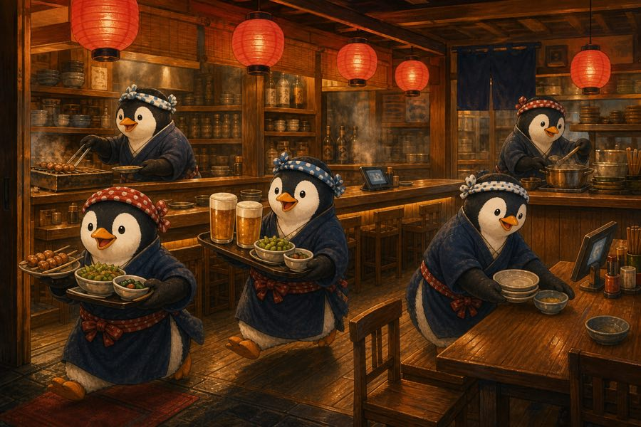

Working in the Philippines and Japan, the difference I felt was how many people there were
This continues from last time. This time, it's about the difference once I was the one working.
When I worked in the Philippines, being in the office together was valued a lot.
Talking with co-workers was also seen as part of the job.
After I came back to Japan, what I felt was that every place is short of people.
One person covers many jobs, and overtime is normal.
To compare Japan now with Japan around the 1980s bubble economy, imagine one izakaya shift.
A shift that once needed eight people may now be run by five because the population has fallen.
Losing those three people makes a big difference.
I once heard this comparison, that this is happening in many workplaces across Japan.


For my first month working in Japan, I wondered why there was so much overtime and why everyone was so busy.
But as I kept working, I got used to it. Now I can even enjoy busy work.
Even so, I still feel there are few people in many workplaces.
So the difference was not how hard people work. It was how many people there are.